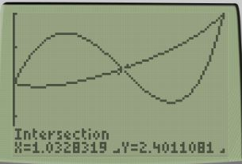

= 8 as well.
= 8 as well.
 What may not be as obvious is what happens when we translate the rectangle:
Obviously the area is still 8, but is 12.
So what are we missing? It turns out that ALL integrals are actually of the form:
What may not be as obvious is what happens when we translate the rectangle:
Obviously the area is still 8, but is 12.
So what are we missing? It turns out that ALL integrals are actually of the form:
However, because g(x) has been the x axis everytime up until now, we have just ignored it.
So looking at this graph we have
.
| Step 1 (hint): |
Let (   |
check answer


|
| Step 2 (hint): |
The integral is g(x) - f(x) because g(x) > f(x) on [0,a]. |
check answer
|
| Step 3 (hint): |
The integral is f(x) - g(x) because f(x) > g(x) on [a,2]. |
check answer
|
| Answer: |
|
check answer
|
| Score: |